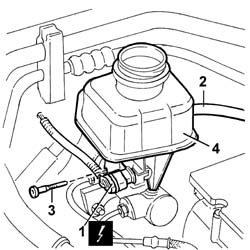

3330C30 brake fluid reservoir - r + r and wash inside
- Path
- Procedures > 33 BRAKES > 3330 HYDRAULIC BRAKING SYSTEM > 3330C BRAKE PUMP, RESERVOIR AND LOAD PROPORTIONING VALVE > 3330C30 brake fluid reservoir - r + r and wash inside
- Kind
- repair procedure (removal / refitting; the operation number is the code)
- Applies to
- all engines; all production periods
- Interactive page
- https://sloeber94.github.io/elrnDB-lThss/en/#/78601
Applies to: all engines; all production periods
 Removing
Removing
 Refitting
Refitting- Disconnect the negative battery terminal.
See in Op. 3330C40 brake fluid reservoir plug - r + r
See in Op. 7040D50 ENGINE COMPARTMENT UPPER SOUND INSULATION SHIELD - R.R.
- Position a suitable container for collecting the brake fluid.
1. disconnect the electrical connection for the brake fluid minimum level warning light switch.
 | Description | Connector |
|---|---|---|
1 | Brake fluid level sensor (switch) | K025 |
2. Disconnect the brake fluid flexible supply pipe to the clutch master cylinder.
3. Undo the bolt fixing the brake fluid reservoir to the brake pump master cylinder.
4. Extract the brake pump fluid reservoir.

Applies to: all engines; all production periods
Refitting
Removing- Wash the inside of the brake fluid reservoir.
- Position the brake fluid reservoir in the special housing and fasten it using the bolt.
- Connect the brake fluid pipe to the clutch master cylinder.
- Connect the electrical connection for the brake fluid minimum level warning light switch.
| Description | Connector |
|---|---|---|
. | Brake fluid level sensor (switch) | K025 |
See in Op. 0010T64 Brake and/or clutch fluid - Check level and top up, if necessary
-
See in Op. 0010T65 HYDRAULIC BRAKING SYSTEM - BLEED AIR
-
See in Op. 7040D50 ENGINE COMPARTMENT UPPER SOUND INSULATION SHIELD - R.R.
See in Op. 3330C40 brake fluid reservoir plug - r + r
- Connect the negative battery terminal.
Topics linked from this page (4)
- 0010T64 Brake and/or clutch fluid - Check level and top up, if necessary
- 0010T65 HYDRAULIC BRAKING SYSTEM - BLEED AIR
- 3330C40 brake fluid reservoir plug - r + r
- 7040D50 ENGINE COMPARTMENT UPPER SOUND INSULATION SHIELD - R.R.
Topics that link to this page (7)
- 1820B10 Clutch fluid RESERVOIR - R.R. and wash interior - Includes bleeding air
- 1820B20 MASTER CYLINDER (pump) - R.R. and Bleed air
- 1820B46 SUPPLY PIPE FROM MASTER CYLINDER (PUMP) - R.R.
- 3330C10 MASTER CYLINDER (PUMP) - R.R. - Bleed air from brakes separately
- 3330D04 BRAKE SERVO - R.R. - Includes separation from master cylinder (pump) - for versions with Adaptive Cruise Control (A.C.C.).
- 3330D10 BRAKE SERVO - R.R.
- 5580A78 Braking system check control unit mounting bracket - R.R.